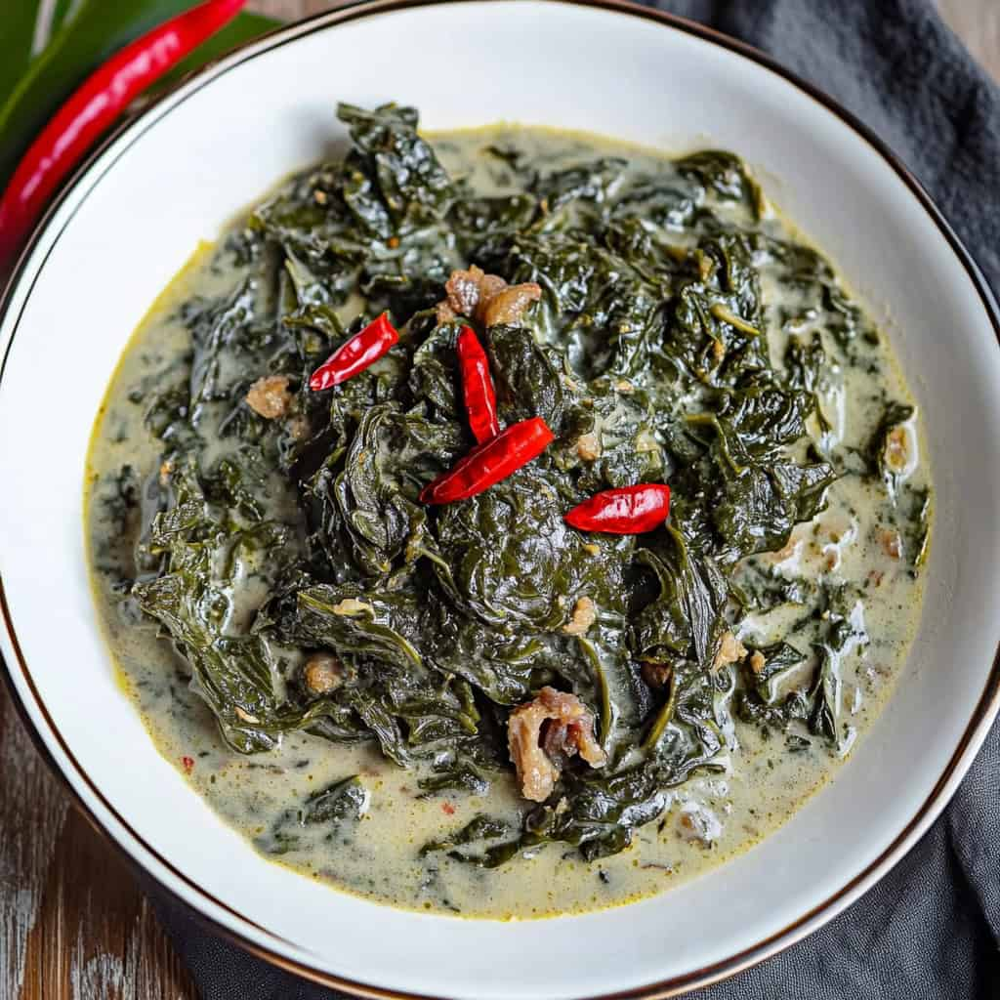

9. Laing

Place: Bicol Region
Dried taro leaves simmered slowly in coconut milk with chili and seasonings. It has a creamy and savory flavor.
Food trip tip: Try it as a side dish with rice.
Food Tripping Guide

Place: Bicol Region
Dried taro leaves simmered slowly in coconut milk with chili and seasonings. It has a creamy and savory flavor.
Food trip tip: Try it as a side dish with rice.